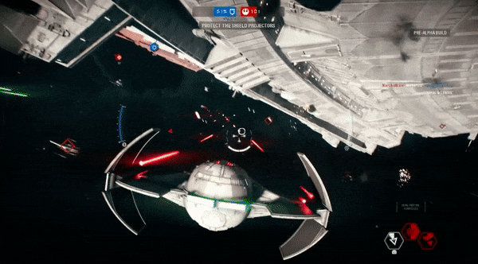
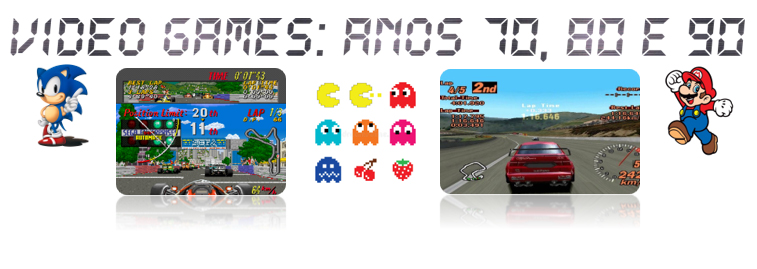
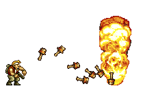
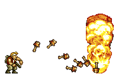
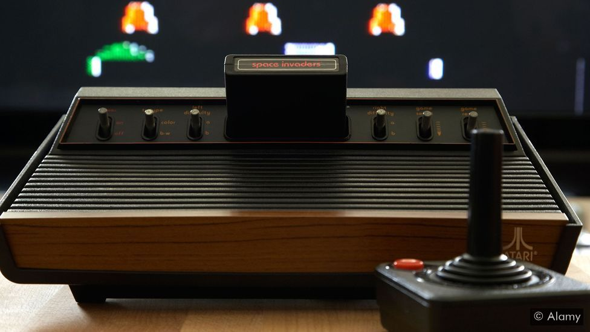
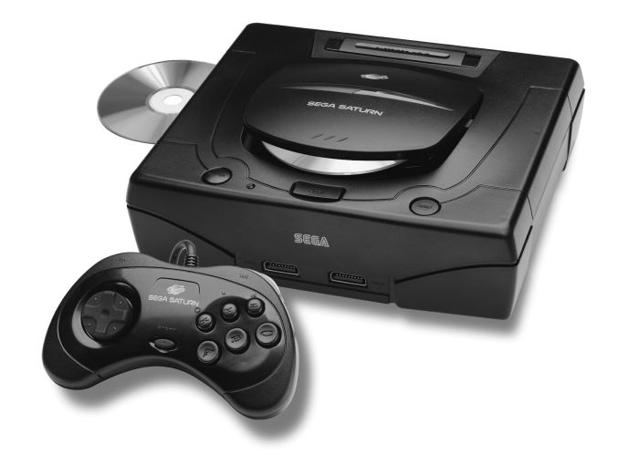
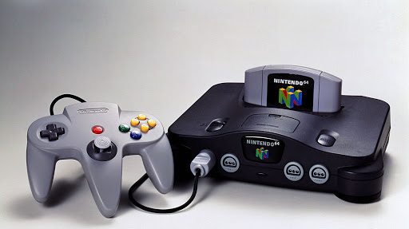
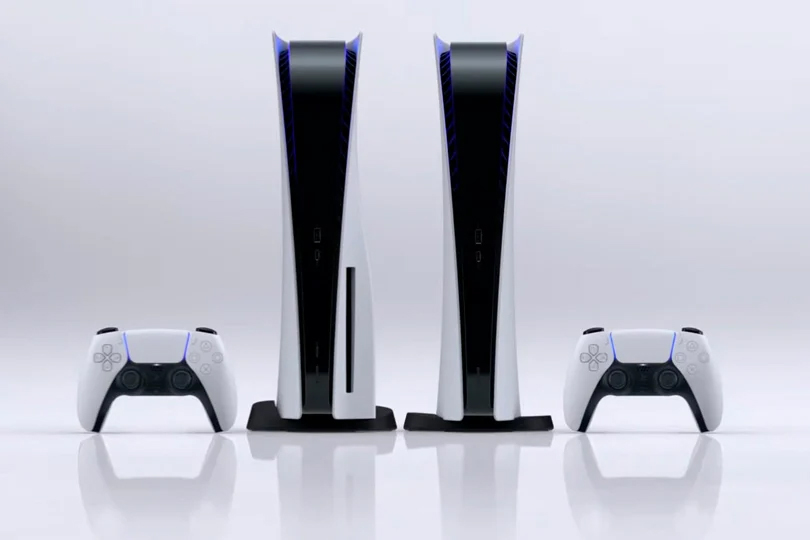

Última atualização: 16 de Outubro de 2020 13h50
 



| CONSOLE |
ANO |
VALOR DE LANÇAMENTO |
| ATARI 2600 |
1977 |
$199 |
| NES |
1983 |
$199 |
| MASTER SYSTEM |
1987 |
$199 |
| MEGA DRIVE |
1988 |
$189 |
| SUPER NINTENDO |
1990 |
$199 |
| SEGA SATURN |
1994 |
$399 |
| PLAYSTATION |
1994 |
$299 |
| NINTENDO 64 |
1996 |
$199 |
ATARI 2600

Em 1973, a Atari comprou a Cyan Engineering, uma empresa de engenharia de jogos, e iniciou
o desenvolvimento de um sistema de video game de nova geração, e trabalhava em um protótipo
conhecido como "Stella". Diferente de máquinas de gerações passadas que usavam lógica de
programação própria e fixa para rodar um pequeno número de jogos, o núcleo do Stella era
composto por uma CPU completa, o famoso MOS Technology 6502, porém em uma versão reduzida,
conhecida como 6507. Eram utilizadas a combinação de chips de RAM e E/S, o MOS Technology
6532, um chip de display e o som de design próprio conhecido como TIA, de Television
(Televisão) Interface (Interface) Adaptor (Adaptador).
A equipe de desenvolvimento estava bastante empenhada, pois buscava lançar o produto antes
que outros similares chegassem ao mercado. Após algum tempo de desenvolvimento, a equipe
contratou Jay Miner, um desenvolvedor de chip que concentrou vários circuitos em um único chip,
tornando o TIA um chip único. Uma vez completo e testado, o sistema estava pronto para a venda.
Na data de lançamento, em 1977, o desenvolvimento tinha custado aproximadamente 100 milhões de
dólares. O preço inicial foi de 199 dólares, tinha 9 títulos (jogos) e foi um sucesso.
NES (NINTENDINHO 8 BITS)

Nintendo Entertainment System (NES, popularmente chamado de Nintendinho) é um console lançado
pela Nintendo na América do Norte, Europa, Ásia, Austrália e Brasil. Originalmente lançado no
Japão em 1983 com o nome de Nintendo Family Computer, Family Computer, ou apenas Famicom, o
sistema foi redesenhado e recebeu o novo nome para ser lançado no mercado americano em 1985.
O NES/Famicom foi o videogame de maior sucesso comercial na sua época, ajudou a indústria de
videogames a se recuperar da crise de 1983 e estabeleceu novos padrões que seriam seguidos
pela indústria. Também foi o primeiro console a ser produzido por terceiros, o que ajudou a
divulgar o sistema em todo o mundo. O NES também foi um dos primeiros consoles a se apoiar em
jogos feitos por terceiros (não só pela própria fabricante). Seu código de modelo é NES-001.
Em 2020, o NES encontra-se em 12º lugar na lista de consoles mais vendidos de todos os tempos,
ficando atrás da Nintendo DS, PlayStation 2, Game Boy, PlayStation, Wii, Game Boy Advance e
PlayStation Portable.
SEGA MASTER SYSTEM

Lançado inicialmente no Japão em 1986, com o nome Sega Mark III, ele enfrentou grandes dificuldades
devido à forte concorrência do NES da Nintendo.
A Nintendo possuía contratos de exclusividade junto às produtoras de jogos. O contrato não permitia
que elas produzissem jogos para nenhum outro aparelho, fazendo com que o Master System dependesse
principalmente dos lançamentos desenvolvidos pela Sega.
O baixo sucesso no Japão não evitou que a Sega lançasse o Master System no resto do mundo. Nos
Estados Unidos o domínio da Nintendo também era muito grande, e logo a Sega vendeu os direitos de
comercialização do Master System naquele país para a Tonka, que não conseguiu fazer um trabalho
eficiente de divulgação e distribuição do console, fazendo com que a popularidade do aparelho fosse
muito baixa.
SEGA MEGA DRIVE

Mega Drive, conhecido como Sega Genesis na América do Norte, é um console de video game de 16 bits da
Sega que concorria diretamente com o Super Nintendo Entertainment System. O console fez grande sucesso
na década de 1990, perdendo espaço após o surgimento e popularização da nova geração de consoles de 32
bits, como o PlayStation da Sony.
Dentre os jogos de maior sucesso desse sistema está a série Sonic the Hedgehog, a aventura de um veloz
ouriço azul para salvar os animais de seu planeta. O jogo foi criado com o objetivo de mostrar a
capacidade do console de processar informações rapidamente, e ainda cativar o público jovem, criando
assim a Sega seu próprio mascote e maior símbolo. A velocidade do jogo tinha por objetivo mostrar a
superioridade do processador do Mega Drive em relação ao console de 16 bits da Nintendo.
No Brasil, o Mega Drive ainda é produzido pela Tectoy, com novas versões. No exterior, de 2006 até o
momento, 3 novos jogos para o console foram produzidos, sendo o mais famoso dentre eles o Pier Solar
and the Great Architects. E em 05 de maio de 2017 a Tectoy relançou o console Mega Drive.
SUPER NINTENDO

Super Nintendo Entertainment System, (Super NES ou SNES ou Super Nintendo) é um console de videogame de
16 bits desenvolvido pela Nintendo que foi lançado em 1990 no Japão, 1991 nos Estados Unidos, 1992 na
Europa e Australásia (Oceania) e América do Sul em 1993. No Japão, o sistema é chamado de Super Famicom,
oficialmente, adotando o nome abreviado do seu antecessor, o Famicom) ou simplesmente SFC. Na Coreia do
Sul, é conhecido como Super Comboy e foi distribuído pela Hyundai Electronics. Embora cada versão seja
essencialmente as mesmas, várias formas de bloqueio regional impedem que as diferentes versões sejam
compatíveis entre si.
O Super Nintendo Entertainment System é o segundo console de mesa da Nintendo, sucessor do Nintendo
Entertainment System (NES). O console apresentou gráficos e recursos de som avançados em comparação com
outros consoles na época. Além disso, o desenvolvimento de uma variedade de chips de aprimoramento (que
foram integrados em placas de circuito) ajudou a mantê-lo competitivo no mercado. Enquanto brutos
gráficos tridimensionais raramente tinham sido vistos antes em consoles domésticos, utilizando o chip
Super FX começando com Star Fox em 1993, o SNES foi capaz de rodar jogos com gráficos tridimensionais
suaves e mais detalhados do que era anteriormente possível. Isso despertou interesse mais difundido em
gráficos de polígono na indústria, ajudando a inaugurar os gráficos 3D, como pode ser visto na quinta
geração de consoles de videogame.
SEGA SATURN

O Sega Saturn foi um console de videogame da quinta geração com 32 bits, lançado pela empresa Sega em 22
de Novembro de 1994 no Japão. Meses depois foi lançado em outros países em: 11 de Maio de 1995 na América
do Norte, 30 de agosto de 1995 no Brasil e, 8 de Julho na Europa.
Tornou-se um console popular no Japão devido à seu marketing de sucesso, com o personagem Segata Sanshiro
criado especialmente para o marketing do Sega Saturn, porém ele não conseguiu repetir o sucesso na América
do Norte e Europa frente seus concorrentes, Playstation e Nintendo 64.
De acordo com o artigo da revista americana GamePro em Julho de 2007, o Saturn vendeu 9,5 milhões de
unidades. O console foi descontinuado na Europa e Austrália em 1998, em Abril de 1999 na América do Norte
e em 23 de Dezembro de 2000 no Japão.
SONY PLAYSTATION

O Playstation, conhecido como PSX ou PSOne, chegou às lojas japonesas em dezembro de 1994, ainda concorrendo
com os consoles da geração anterior. Foi apenas um ano depois, em setembro de 1995, que o produto finalmente
chegou ao Ocidente. Os primeiros jogos não empolgaram muito, e tinham grandes dificuldades em adaptar todo o
potencial do aparelho, mas isto não afetou suas vendas, que foram acima das expectativas da Sony.
Com seu principal concorrente, o N64, chegando às lojas apenas em 1996, o Playstation teve um bom tempo para
conquistar os jogadores e, mesmo ainda sem saber, causou duas revoluções no mundo dos games: o memory card e
o seu controle Dual Stick. Embora o memory card não fosse exatamente uma novidade nos games, foi a primeira
vez em que ele foi visto como algo fundamental pelos jogadores, passando a ser vendido junto com o console na
maioria dos países – algo que dificilmente aconteceu no Brasil.
NINTENDO 64

Nintendo 64 (com a grafia estilizada NINTENDO64, e abreviação N64), foi um console de videogame da quinta geração
lançado pela empresa japonesa Nintendo, em 23 de junho de 1996 no Japão. Lançado como um console com gráficos de
64 bits. Contava com três títulos de lançamento disponíveis: Super Mario 64, PilotWings 64 e Saikyou Habu Shogi.
Nos EUA e no Brasil foi lançado simultaneamente em 29 de setembro de 1996, e em ambos os países, havia apenas
dois títulos de lançamento disponíveis: Super Mario 64 e PilotWings; mas, enquanto nos EUA os títulos eram vendidos
à parte, no Brasil, o console vinha com o cartucho de Super Mario 64 incluso. Já quando foi lançado na Europa,
em 1 de março de 1997, o console contou com sete jogos de lançamento: além de Super Mario 64 e PilotWings, havia
Wayne Gretzky's 3D Hockey, Cruis'n USA, Star Wars: Shadows of the Empire, FIFA Soccer 64 e Turok: Dinosaur Hunter.
O Nintendo 64 foi o último grande console doméstico a utilizar cartucho até o Nintendo Switch, lançado em 2017.
No Brasil, foi lançado oficialmente pela Playtronic, e, a partir de 1997, pela empresa Gradiente Eletrônicos, que
assumiu a representação da Nintendo no país. Em Portugal, foi distribuída pela Concentra.
VEM AÍ A NOVA GERAÇÃO !
